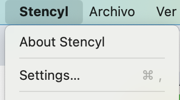
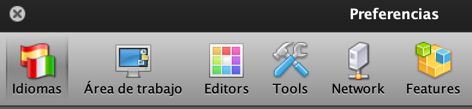
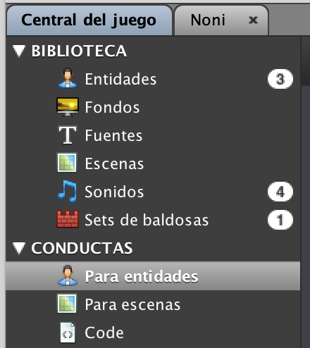
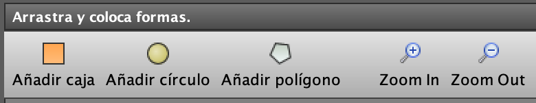
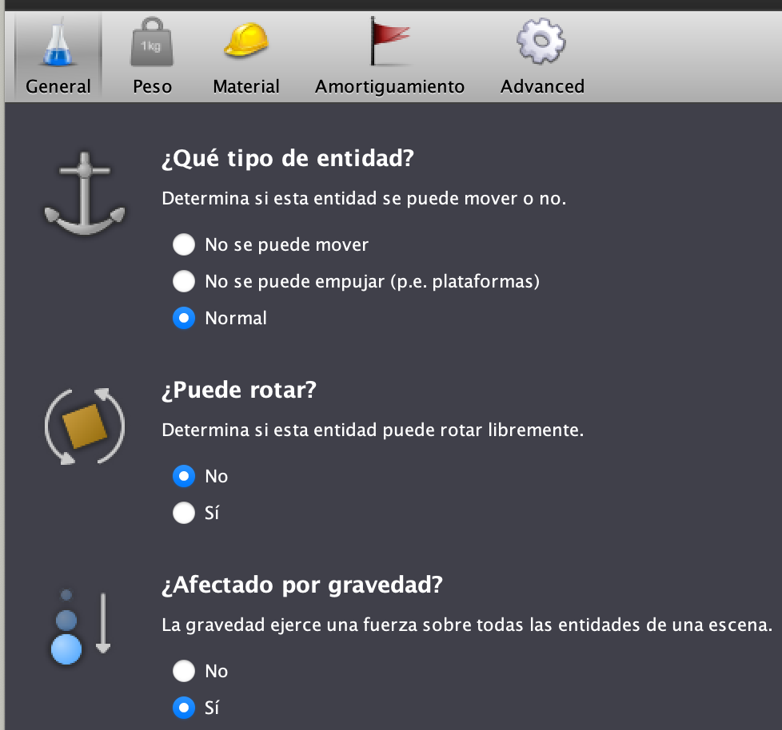
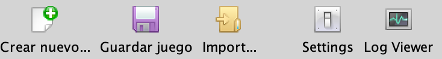

Stencyl es una plataforma de creación de videojuegos 2D. Permite crear videojuegos desde Linux, OS X y Windows para varias plataformas como
IPhone, IPad, Android, Flash, Windows, Mac y Linux. Tiene varios versiones pero nosotros usaremos la gratuita.
Utilizaremos la Versión 4.0.4.
No hace falta logearnos a no ser que necesitemos sprites, comportamientos.... En un principio no nos logeamos ya que a los alumnos se les
dara todos los recursos que necesitaran a lo largo del curso. Y los comportamientos que necesitasen los harán ellos.
Abrimos Stencyl y en el menu principal aparece Crear nuevo, Guardar juego, Import, Settings(podemos accede a Settings cuando tengamos el juego abierto),
Log Viewer(consola), Stencyl Forge(Permite descargar recursos de internet, los alumnos no lo usarán), Centro de ayuda(Guía de ayuda para
el profesores/alumnos).

Para comenzar con Stencyl nos importaremos el Kit de "Crash Course Kit Alumno" para poder explicar un poco el entorno con el que trabajaremos.
Antes de poder Importar el Kit necesito tener un directorio para guardar los juegos.
El "workspace" es mi lugar de trabajo. Si compartimos el ordenador el alumno necesitara cambiar el "workspace" para que pueda acceder a sus juegos. Para hacerlo no tenemos que tener ningún juego abierto. Vamos al menu principal y seleccionamos "Settings"

Aparecera una ventana de Preferencias con varias botones.
En Idiomas podemos cambiar el idioma para trabajar más comodo pero en alguna ocasión veremos mezclados el Español e Inglés y a veces con o sin
acento en algún bloque....

Tendremos que crear el directorio donde trabajara el alumno. Creamos una carpeta de "C:/Trabajos Stencyl/Nombre 1º Apellido del Alumno"
pej "C:/Trabajos Stency/Fernando Roca".
En Área de Trabajo cambiaremos el directorio de trabajo en "Workspace Folder". Para cambiarlo doy a las flechas que aparecen a la derecha
y selecciono "Choose Folder".

Y selecciono en el directorio Trabajos Stencyl el nombre del niño. Y le doy al botón del "Open".
Damos al botón de "Aplicar cambios".
Nos aparece una ventana que nos dice si queremos guardar todos los juegos, kits...... que hay al nuevo workspace y le decimos que "NO" para que no nos copie los proyectos de otro compañero al nuevo workspace. Siempre que hagamos el cambio de un alumno a otro nos lo preguntara y siempre hay que decir que "NO".
Dentro del directorio del alumno crea otro directorio stencylworks.
Y dentro de stencylworks nos crea una serie de carpetas donde se encontraran todos los juegos, comportamientos......Y ya podemos empezar a importar el juego.
Abrimos Stencyl y vamos al menu principal Archivo/Import Game. Buscamos "Crash Course Kit Alumno.stencyl" lo seleccionamos y damos al botón
de "Open" y lo guardara dentro del "Mis Proyectos/Kits"
El número que aparece a la derecha es el número de Kits o Juegos que tengo en mi "workspace".

Vamos abrir el juego con dobleclick. Y en Entidades aparecen la bala, el Clown y el Noni. Son las entidades que usaremos para hacer el juego.
Nos metemos en el Noni con dobleclick para explicar el entorno y aparecera lo siguiente.
La primera solapa que aparece es la de "Apariencia" y en la parte de abajo a la izquierda están todas las animaciones que necesitaremos. Cada una tendrá un
nombre (siempre sin acentos ni carácteres especiales). Y si lo seleccionamos vemos que algunos tienen animaciones y otros no.
El botón de "Bucle" está checkeado porque la animación pej de "Walk Left" tiene varias animaciones.
La siguiente solapa es la de "Conductas". Podemos crear comportamientos que serán intercambiables entre juegos. Los comportamientos de crearán en Central del Juego/CONDUCTAS.

En la parte de la derecha aparece como un botón para poder crear la conducta.
Aparecerá una ventana para crear la conducta. Siempre utilizaremos el Modo diseño ya que las otras opciones hay que escribir código y al alumno
le resultara más complicado.
También podemos seleccionar de que tipo será la conducta: de entidad o de escena.
Y por último ponemos el nombre como pej: Movimiento. Y le damos al botón de "Crear".
En los comportamientos podemos pasarles parámetros como: la dirección de nuetro personaje, la velocidad del movimiento, las animaciones de la entidad......
Haremos algún comportamiento y lo veremos con un poco más de detalle.
Continuamos con la siguiente pestaña del Noni que es "Events".
Los Eventos son sucesos que ocurren en el juego, pueden ser definidos por el alumno o que ellos mismos provoquen. Como pej si el alumno hace que el
personaje se mueva y se choca con algo ese choque provoca un evento de de "Collisions".
En la parte de la izquierda aparece un menu si damos a "+ Add Event". Los que normalmente utilizamos son los siguientes.
Eventos Basics. Son Eventos de Cuando se Crean, Update (este es el por siempre del Scratch) y el Drawing que lo utilizaremos para poder poner pej: Puntos, Vidas a nivel de Escena. También se pueden poner Drawing a nivel de Entidades para saber pej la posición del personaje.....
Input lo utilizaremos sobre todo cuando pulsemos una tecla y el click del ratón.
Time es el esperar del Scratch. Pero cuidado porque si no se usa bien se puede crear bloqueado.
Actors podemos hacer diferentes acciones dependiendo si se Crea o Muere, si Entra o Sale de la Escena ó si Entra o Sale de una Región un personaje.
Collisions. En Stencyl tenemos las colisiones que podemos definir a nuestro gusto en la pestaña siguiente "Colisión". Podemos colisionar con cualquier cosa, con un tipo de Actor, con un Grupo en específico.....
Sound para poder poner sonidos. También se puede hacer canales de sonido para que se puedan oir varios sonidos a la vez.

En la pestaña de Colisión podemos poner una colisión a cada animación. Se ve en este caso con un cuadrado naranja.
Podemos definir la colisión de distintas formas caja, poligono o circulo.
Y también podemos definir su posición inicial en X/Y y su anchura/altura.
Aparece un ckeck de "¿Es un sensor?". Esto lo marcaremos para que aunque colisiones pueda atravesarlo.

La Física que en Stencyl la tenemos en varias solapas para poder configurar como más nos convenga.
La Física/General para saber si la entidad se puede mover o no, si puede o no rotar y si tiene o no gravedad.

La Física/Peso para saber la masa de la entidad y su masa angular.
La Física/Material podemos poner distintos materiales a la entidad con fricción y elasticidad. Dependiendo que material seleccionamos nos pondrá por defecto la fricción y elasticidad que lo podremos modificar si nos interesa.
La Física/Amortiguamento habrá una amortiguamento lineal y angular.

La Física/Advanced se pueden desactivar las fisicas, se pueden cambiar los limites de colisión se el actor cambia de tamaño, que tenga colisiones continuas si nuestro actor va muy rapido y colisiona con superficies delgadas, podemos pausar o no al actor,
Normalmente el Amortiguamento y Advanced no la solemos tocar.
Por último vemos las Propiedades del Noni. La más importante es la última propiedad que es al grupo de colisión que pertenece el actor.
Sonido. En nuesto juego tenemos varios sonidos. Para crear un sonido damos click en el cuadrado que aparece a la derecha. Le ponemos un nombre. Damos al botón de "Importar MP·" ya que ejecutamos sobre Flash.
Set de baldosas. Pondremos las baldosas que necesitemos. En nuestro caso ya tenemos una por defecto. Y si damos dobleclick nos aparece las baldosas y si seleccionamos una podemos ver el tipo de colisión que tiene pudiendolo cambiar según nos convenga.

Para poder empezar un juego tenemos que hacer un Escenario.
El centro de Stencyl esta en la esquina superior izquierda. Y la dirección de un actor es el ángulo al que mira. Por defecto los actores tiene una dirección de 0 grados (mirando a la derecha) y va en sentido de la dirección de un reloj.
Para poder definir teclas que pulsar iremos a Settings/Controles.

Para poder definir variables globales vamos a Settings/Atributos. Para poder crear uno nuevo damos al botón "Crear". Y podemos seleccionar el tipo
de la variable: Númerico, Texto, Boolean (Verdadero ó Falso)... estos son los que normalmente utilizamos.
Estas variables se pueden crear dentro de una entidad en una pestaña de "Eventos/Atributos del juego" pero a veces cuando se va a utilizar el algún
evento no nos aparece asi que habrá que cerrar la entidad y volver abrirla.
Y por último veremos Settings/Grupos que serán los grupos de colisión entre las entidades y las tiles. Hay unos grupos que están definidos por defecto y tienen un candado y nunca se podrán borrar pero si que se podrá cambiar la colisión. Y el alumno podrá crear nuevos grupos con colisiones.
Podemos volver a ejecutar el juego sin tener que hacerlo desde Stencyl pero no tendrá las últimas actualizaciones.
- Cuando ejecutamos el juego aparece una barra de herramientas de "Flash Player Debugger" y vamos a Archivo y aparecerán todas las ejecuciones que
hemos hecho.
- Seleccionamos el primer archivo y automaticamente se ejecutará.
Hay a veces que cuando ejecutamos el juego nos viene bien ver las colisiones de todas la Entidades. Para ello tenemos que ir a la opción de "Ejecutar" y seleccionamos "Enable Debug Drawing". Y al ejecutar podremos ver esas colisiones.
Volver al índice